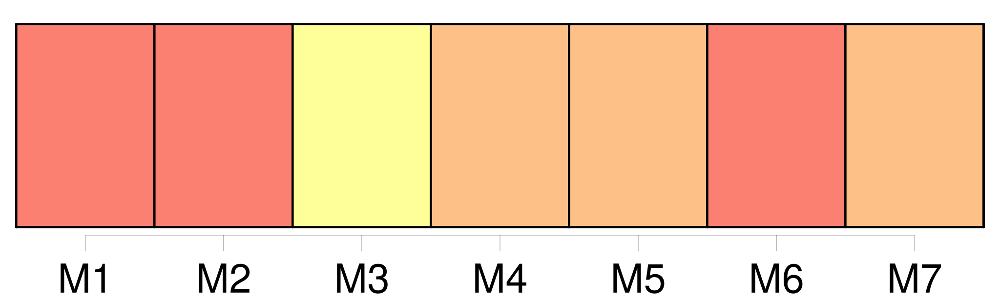

Longueur nb maillons : 13 mentions |
 |
Les enfans doivent [des alimens] à leurs père et mère, et autres ascendans qui sont dans le besoin. [1 phrases] Les gendres et belles-filles doivent également, et dans les mêmes circonstances, [des alimens] à leurs beau-père et belle-mère ; mais cette obligation cesse, 1. [5 phrases]
[Les alimens] ne sont accordés que dans la proportion du besoin de celui qui [les] réclame, et de la fortune de celui qui [les] doit. [1 phrases]
Lorsque celui qui fournit ou celui qui reçoit [des alimens] est replacé dans un état tel, que l'un ne puisse plus [en] donner, ou que l'autre n' [en] ait plus besoin en tout ou en partie, la décharge ou réduction peut en être demandée. [1 phrases]
Si la personne qui doit fournir [les alimens] justifie qu'elle ne peut payer [la pension alimentaire] , le tribunal pourra, en connaissance de cause, ordonner qu'elle recevra dans sa demeure, qu'elle nourrira et entretiendra celui auquel elle devra [des alimens] [1 phrases]
Le tribunal prononcera également si le père ou la mère qui offrira de recevoir, nourrir et entretenir dans sa demeure, l'enfant à qui il devra [des alimens] , devra dans ce cas être dispensé de payer [la pension alimentaire] |
|
Il est possible de télécharger la ressource sur la page Ortolang |
Si vous avez des questions ou vous voyez des erreurs, merci d'envoyer un mail à silvia.federzoni89@gmail.com |